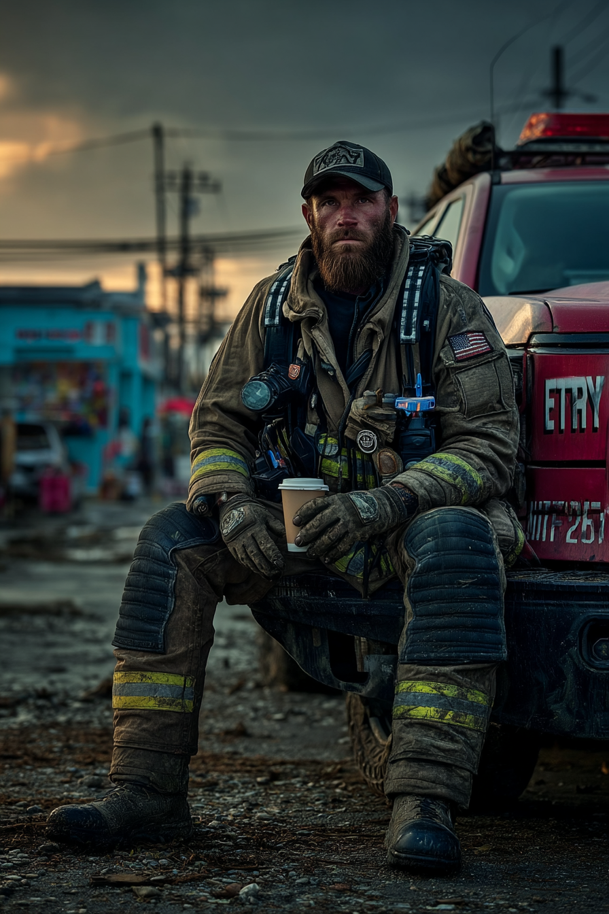

KONTAKTER
15+ år av USAR och emergency response har byggt ett omfattande nätverk inom SAR, brandkår, teknisk expertis och disaster management. Working-class loyalty och praktisk tillförlitlighet.

USAR & FEMA
Historia: Sam's mentor i 10+ år
Användbarhet: USAR operations, federal mobilisering
Problem: Märkt Sam's minskade engagemang efter Pittsburgh
Historia: Worked Hurricane Maria, Haiti earthquake
Användbarhet: Breaching, demolition, structural entry
Problem: Inga - solid working relationship
Historia: Träffades under FEMA-träning, flera gemensamma insatser
Användbarhet: West coast USAR resources, tech equipment
Problem: Long distance, limited contact
Specialisering: Federal disaster mobilization
Användbarhet: FEMA resources, federal authority
Problem: Bureaucratic, by-the-book
FIRE & EMERGENCY SERVICES
Historia: 15 år samarbete, Pittsburgh tunnel collapse
Användbarhet: Pittsburgh FD resources, incident command
Problem: VET att något var fel med Pittsburgh-incidenten
Specialisering: Technical rescue, confined space
Användbarhet: DMV area backup, rescue gear
Problem: Inga - professional contact
Historia: Joint training exercises
Användbarhet: Medical support, trauma care
Problem: Sam undviker medicinska frågor
Historia: Childhood friend, blev firefighter samma tid
Användbarhet: Fire investigation, building records
Problem: Inga - old friend, no questions
TECHNICAL & ENGINEERING
Specialisering: Building collapse analysis
Användbarhet: Structural assessments, failure analysis
Problem: Academic - förväntar sig data/dokumentation
Specialisering: Tunnels, infrastructure, underground
Användbarhet: Building plans, tunnel specs, permits
Problem: Inga - appreciates Sam's practical knowledge
Specialisering: Soil mechanics, foundation failure
Användbarhet: Ground failure analysis, subsidence
Problem: Pittsburgh collapse data doesn't add up
Specialisering: Seismic activity, earthquake damage
Användbarhet: Seismic data, anomalous readings
Problem: Inga - federal colleague
MILITARY RESERVES (USAR)
Historia: Reserve unit, multiple training rotations
Användbarhet: Military engineering, heavy equipment
Problem: Sam's reserve participation dropped
Specialisering: Disaster relief coordination
Användbarhet: Military mobilization, federal coordination
Problem: Limited contact senaste året
PITTSBURGH LOCAL
Relation: Äldre bror, strained efter mamma's död
Användbarhet: Pittsburgh intel, working-class network
Problem: Märkt Sam's changes, worried
Historia: High school friend, union brother
Användbarhet: Electrical work, Pittsburgh access
Problem: Sam stopped drinking with the guys
Historia: Robert dog i Pittsburgh tunnel collapse
Problem: Sam känner ENORM guilt, undviker henne
Status: Försöker kontakta Sam, vill ha answers
Historia: Neighborhood bar, knows everyone
Användbarhet: Pittsburgh street intel, safe space
Problem: Sam barely visits Pittsburgh anymore
EQUIPMENT & SUPPLY
Användbarhet: Tools, safety gear, technical equipment
Philosophy: "Cash talks, paperwork walks"
Problem: Noterat Sam's ovanliga gear-requests
Användbarhet: Construction materials, quick access
Loyalty: Appreciates Sam's pro work
Problem: Inga - transactional relationship
Historia: Dad's old friend, treats Sam like family
Användbarhet: Vehicle repair, heavy machinery
Problem: Worried about Sam's isolation
Användbarhet: Housing security, no intrusions
Attitude: Professional, respects privacy
Problem: Sam's late rent payments occasionally